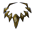
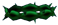
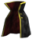

Lament of Innocence
Lament of Innocence
Castlevania: Lament of Innocence é um jogo de ação e aventura lançado em 2003 para o PlayStation 2, marcando a estreia da série Castlevania no universo 3D. Situado no século XI, o jogo narra a origem da maldição dos Belmonts e a eterna luta contra Drácula. Você controla Leon Belmont, um cavaleiro em busca de sua amada raptada, enquanto explora um vasto e sombrio castelo. Com combates intensos, quebra-cabeças desafiadores e uma atmosfera gótica envolvente, Lament of Innocence oferece uma nova perspectiva sobre a mitologia da série, combinando a ação clássica de Castlevania com gráficos modernos e uma narrativa rica.
Magias Presentes No Jogo
| habilidades | NOME | MAGIA |
|---|---|---|
| Alucart Shield | Nenhum efeito. | |
| Axelord Shield | Invoca um Axe Knight | |
|  | Herald Shield | Uma mulher o deixa resistente a fogo e eletricidade |
 |
Alucard Shield | Une os poderes para se transformar em um escudo de ataque |
|  | Fire Shield | Dragões de fogo varrem a tela |
|  | Knight Shield | Invoca um cavalo de guerra que aumenta o ATT em +20 |